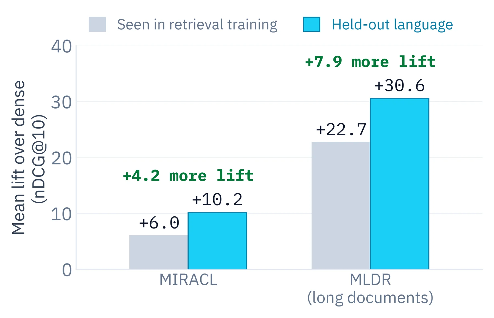

Building search that understands content — and running the models for it inside
European jurisdiction.
Kasper Rømer GrøntvedAI EngineerDraft
Structural draft. The flow is right; the specifics still need to come out of the source deck.
Draft
Part one
ML and data at Colourbox
With Skyfish at its core.
Draft
The landscape
Two products, two retrieval problems
A stock library and a DAM system look similar from the outside. The search problem
underneath is not the same one.
Stock photo library
One shared catalogue, many unrelated buyers. Every user searches the same
corpus with no prior relationship to any of it. Intent is broad and visual — "two people
laughing in an office, lots of copy space".
Success is finding something good enough, fast. There is
rarely one correct answer.
DAM system
One customer's own assets, and they know what's in there. The user is often
looking for a specific known item — a campaign shoot, a signed contract, last year's product
video.
Success is finding the right one. A near miss is a failure,
not a compromise.
ML and data at Colourbox
This distinction drives every later architecture decision — recall-oriented browsing versus precision-oriented lookup. Make it early and refer back to it.
Draft
The hard part
The cold start problem
A DAM tenant arrives with assets and no behavioural signal whatsoever.
No clicks, no queries, no history. Everything that makes a stock catalogue
rankable has to be earned over years. A new tenant has none of it on day one.
Metadata is whatever they had. Filenames, inconsistent tags, empty
description fields — sometimes nothing but IMG_4821.jpg.
And they judge us immediately. The first search a new customer runs is
the one that decides whether they trust the product.
Why content understanding is the answer
If the model reads the asset itself, day-one quality no longer depends on anyone having
labelled anything.
That reframes search from a behavioural problem into a
representation problem — which is a problem we can actually solve offline, before the customer
ever logs in.
ML and data at Colourbox
This is the strategic argument for the whole ML investment. If they only remember one slide from part one, make it this one.
Draft
Part two
EU sovereignty
Where the weights come from, and where they run.
Draft
The awkward fact
The open models are mostly not European
Open weights and European provenance are two different things, and it is worth being
precise about which one you are buying.
Where it was trained
The strongest open vision and embedding models come overwhelmingly from US and Chinese labs.
That is simply the state of the field.
provenance
Where it runs
Open weights mean we can pull them onto our own hardware. Nothing leaves. This is the part
we fully control — and it is the part that matters legally.
what we decide
Where the data goes
A hosted API means customer assets cross a border and a jurisdiction on every request. Open
weights on EU infrastructure means they never do.
the actual question
ML and data at Colourbox
Be honest here — pretending there are EU-native models at frontier quality for every task would not survive questions. The defensible claim is about processing and data residency, not about the weights' passport.
Draft
The commercial case
Why customers keep asking
Sovereignty started as a procurement checkbox. It is turning into a reason people
switch vendor.
Public sector and regulated industries ask first. For them it is not a
preference, it is a condition of signing.
Being EU-owned is part of the answer. Not just EU-hosted — the company
holding the data is itself under European jurisdiction, with no foreign parent to compel.
The frequency is rising.Add the real trend: how
often this now appears in RFPs and security reviews.
→
From cost to advantage
Self-hosting was originally the expensive path. When customers start requiring it, the
infrastructure we already built stops being overhead and becomes the differentiator.
the strategic turn
ML and data at Colourbox
Anecdotes land better than assertions here. Bring one real customer conversation if it can be shared.
Draft
Part three
Architecture and self-hosted inference
What it actually takes to run this ourselves.
Draft
Infrastructure
The serving stack
Two engines, two different jobs. Picking per workload rather than standardising on one
is the whole trick.
Triton Inference Server
The workhorse for vision and embedding models: dynamic batching, multiple
frameworks behind one endpoint, ensemble pipelines so preprocessing and inference live in the
same request.
Right choice when the model is small, the traffic is bursty, and
throughput per GPU is what you are optimising.
indexing · embedding · classification
vLLM
The workhorse for generative and VLM workloads: paged attention, continuous
batching, an OpenAI-compatible surface so application code does not care where the model lives.
Right choice when sequences are long, output is autoregressive, and
KV cache is the binding constraint.
captioning · extraction · reasoning
Both run on our own GPUs — add the real
hardware and topology, inside EU data centres.
ML and data at Colourbox
Resist a stack-diagram-with-fourteen-boxes. The point is that engine choice follows workload shape, and both stay on our metal.
Draft
Orientation
Resetting the baseline
Single-vector dense search uses one fixed-size embedding for the query,
and one for each asset.
queryq
q1q2q3q4
Encoder
pool
documentd
d1d2d3d4d5d6
Encoder
pool
one similaritypool(q) · pool(d)
Encoded independently
Query and document never meet during encoding — so the whole document side is prepared
offline, and query time is one similarity search.
But it makes one strong bet
That pool step preserved every clue a future query might care about — decided
before anyone knew what would be asked.
ML and data at Colourbox
Keep this tight. It is a shared-vocabulary slide, not an argument. The argument starts next.
Draft
The puzzle
Why do DAM users still search by filename?
If we have strong vision models and strong embedding models, why does
every customer still type a filename into the box?
They are not being primitive. Exact match
came back into fashion for a reason, and it is worth understanding which reason.
ML and data at Colourbox
Ask the room to guess before advancing. Most people answer "infra" — which is half right, and the other half is the interesting half.
Draft
The puzzle
Filename search is hard to beat — and not only on infra
The boring infra reasons
Zero infrastructure — it already ships with the product
No model to deploy
No index to maintain
Privacy by default
But also: why it sticks
Exact matching is extremely strong for filenames.
Granularity is non-negotiable — when you want
Q3_campaign_final_v2.psd, you want exactly that file.
Filenames and folder trees are structured data, and structure is
cheap to exploit.
So the bar for a learned retriever is high
It has to earn its keep by adding semantics without losing exact local clues —
and justify deploying a model and maintaining an index on top.
ML and data at Colourbox
The right-hand column is the part people underrate. Spend your time there.
Draft
The bottleneck
One vector has to carry every clue
A single query can hold several independent relevance constraints.
"two people laughing in a
bright office, wide shot, copy space on the left"
2 peoplelaughingofficewide shotcopy space left
↓ compressed into
[ single vector · dim d ]
→ diluted signal
"Copy space on the left" is a fact about a region of the image. Pooling decided
what to keep before it knew anyone would ask.
ML and data at Colourbox
This is not "a semantic question about authentication" — it is five constraints that all have to survive. This is the bottleneck to keep referring back to.
Draft
Capacity isn't the fix
Just increase the dimension?
The obvious instinct — and a clean result showing why it doesn't resolve the structural
problem.
LIMIT builds a toy corpus from random attributes and names; documents
hold combinations of them, and queries ask for those combinations.
It looks artificial — and it isn't. Product search has exactly this
shape.
The question it poses: can one point encode every useful combination of
evidence?
gaming monitor27"140 Hz
Three constraints that must all survive — exactly like subject × setting
× mood × framing across our catalogue.
Exact retrieval breaks the moment the user says "the beach shoot" and the asset
is called DSC02074.JPG, in /Uploads/2024-06/, description empty.
On LIMIT's synonym variant, BM25 collapses. Exact matching is only
a gift when the vocabulary lines up — and in a DAM, the uncurated folder is the default state.
So we want both
Exact-ish local evidence, which lexical search gives us free —
and soft semantic matching, which dense retrieval gives us free.
Read the heatmap row by row: each row is a query token, each column a token from the asset's caption or OCR text. For each row MaxSim keeps only the best cell, then sums. Point at row 2: the customer typed English, the asset was captioned in Norwegian. Exact match scores zero there — this is the multilingual case our customers actually live in.
Draft
The operator, our version
And for us, over patches
Same operator, different unit. For every query token, take its best-matching
image patch — then sum those best matches.
Two beats. Max keeps a rare local clue alive where mean pooling averages it away. And patches are why this generalises straight from images to PDF pages — a page is an image with structure, which is the DAM case.
Draft
Where this lands
The useful overlap
Multi-vector search sits where the two things we wanted actually meet.
Lexical search
Exact granularity
Local clues survive intact. Semantics do not.
Dense search
Soft semantic matching
Meaning survives pooling. Local clues may not.
Multi-vector search
Both, at a price
Late interaction tries to keep exact local evidence and soft
semantic matching — for more storage and more scoring work.
And the bill
One vector per patch instead of one per asset — add our real index
multiplier — and scoring is no longer a single dot product. Viable as a reranker over a
dense first stage; harder as the first stage itself.
So: which product?
Stock browses a shared catalogue — dense, and stay dense.
DAM looks for one specific asset, where a near miss is a failure. That is
where the patch-level index cost is worth paying.
End by pointing people at the original for the field cases and production objections. This primer deliberately stops here.
Draft
Part four
Search in our systems
Where each of these actually ends up.
Draft
Product one
Stock: visual retrieval
Broad intent, one shared catalogue, and a user who wants to browse rather than locate.
Recall over precision. Twenty good options beat one perfect one, because
the buyer is choosing on taste we cannot model.
The query is visual, not lexical. Mood, composition, colour, copy space —
none of which anyone reliably typed into a metadata field.
Dense embeddings fit this well. The compression that hurts precise lookup
is far less costly when the target is a whole region of the space.
Verdict: dense, and stay dense
The compression that ruins a precise lookup costs far less when the target is a whole region
of the space. Paying patch-level index cost across the shared catalogue buys us little here.
Open question: whether late interaction as a
reranker on the top-K changes what buyers actually license.
Tie this back to slide 3: recall-oriented product, recall-oriented architecture.
Draft
Product two
DAM: mixed modality, mostly visual
Images, video, PDFs and a long tail of everything else — inside one search box, over
one customer's own material.
Images
The bulk of it, and the best-understood case. Same visual
encoders as stock, different precision expectations.
Video
Sampled to frames, which turns one asset into many vectors and
makes the temporal question — which moment? — unavoidable.
PDFs
Where visual document retrieval pays off: page images rather
than extracted text, so layout, tables and figures stay searchable.
Everything else
Office files, audio, archives, formats one
customer cares about deeply and nobody else has. The long tail is real.
The unifying move
Treat almost all of it as a visual retrieval problem and the DAM stops
needing one pipeline per file type. A PDF page is an image with structure; a video is a
sequence of them.
And this is where patches pay
Once every asset is patches, MaxSim applies unchanged — and the DAM is precisely the product
where a near miss is a failure. This is where late interaction earns its index
cost.
ML and data at Colourbox
The PDF-as-image point is the one people find surprising — it is worth an extra beat, and it is where late interaction has the clearest case.
Draft
Field case
The evidence is in the asset, not the caption
Text makes exact matching obvious. Visual documents make the compression problem
obvious — and a DAM is mostly visual documents.
This is the section where the DAM argument gets its teeth. Everything before this was about the shape of the retrieval problem; this is about what happens when the thing you are searching is a picture of a page.
Adapted from Amélie Chatelain's second field case. Her framing: code makes exact-ish matches obvious, visual documents make compression obvious. Ours is the same claim with our assets in it.
Draft
Why visual retrieval at all
A picture is worth a thousand words
Sometimes the evidence you are looking for is a clean line of text. Sometimes it is
simply not.
Figure: Amélie Chatelain,
Late Interaction
Field Guide · The Garden of Earthly Delights, H. Bosch, Museo del Prado ·
example from Benjamin Clavié's talks
the query
"painting with a guy stuck
in a mussel"
What a caption pipeline gives us
No text on the asset at all. To match this query the pipeline would have to have guessed,
at indexing time, that this one odd detail would matter — or be exhaustively
descriptive about everything.
This is our contributor metadata problem
A stock contributor types eight keywords. A DAM customer types none. Neither of them
anticipated the query — and a caption is a lossy, one-shot bet made before the query exists.
Read the query out loud, then let people hunt for it in the painting. It takes a while, and that is the point.
A traditional text pipeline cannot touch an image without a captioning model in front of it. And captioning is exactly where this breaks: the model would have to decide in advance that a man stuck inside a mussel shell is the salient fact about this painting. It will not. It will say "surreal triptych with many figures".
Bring it home: this is our metadata situation with the labels changed. Contributor keywords on stock, near-nothing on a new DAM tenant. Direct visual retrieval keeps regions of the asset available for matching instead of forcing everything through a text bottleneck first.
Draft
Why visual retrieval at all
And in a DAM, the picture is usually a page
Paintings are a fun example. A customer's own report PDF is the case we are actually
paid to solve.
"is there uniform interest
across all EU regions in adopting Individual Learning Accounts?"
What OCR gives us
The caption, if we are lucky, and a handful of country labels. The answer lives in the
spatial pattern of the shading — which no OCR pass and no generic caption
preserves.
Preprocessing is not neutral
Whatever OCR or captioning fails to keep is gone before ranking starts.
That is an irreversible decision taken at index time, by a component nobody thinks of as part
of the ranker.
The natural objection to the painting slide is "I'm not retrieving paintings". This is the answer. A very large share of enterprise documents carry their meaning in figures, and our DAM tenants upload exactly this kind of material.
The last card is the one worth pausing on. We tend to treat OCR and captioning as plumbing, upstream of the interesting part. But they decide what the ranker is even allowed to see. A pipeline that reads "map of Europe" off this page has already lost, no matter how good the retriever behind it is.
Note in passing that this happens to be an EU policy report — the kind of document a public-sector tenant would want indexed without it leaving European infrastructure.
Draft
Deep dive · why visual retrieval
Comparing two bars is not a text operation
A third case, because it is the one where the text pipeline looks most obviously
hopeless.
"is there a rise in CDER
NME submissions from 2007 to 2008?"
What OCR gives us
Axis labels and a legend. To answer the question it would have to estimate the
height of every bar and rebuild the chart as a table. Possible in theory, expensive
and brittle in practice.
In pixel space it is almost trivial
The 2007 and 2008 bars sit side by side; their segments can simply be read against each
other, with no number ever recovered.
Optional slide. Skip if time is short — the map already makes the argument.
Keep this one if the room is technical, because it is the cleanest statement of the principle: chart-to-table extraction is a lossy, expensive detour around a comparison that is directly available in the image. Hold onto this chart, we are going to use it again in a minute to look inside the model.
Draft
Deep dive · why visual retrieval
Sometimes the signal is the layout itself
Partly textual, partly visual, partly structural — and the structural
part is the part OCR throws away.
"number of hose
installation diagrams · pressure systems manual"
What OCR gives us
A bag of fragments — U BEND, OFFSET, CROSS OVER —
with no way to tell which fragments belong to separate diagrams. Without layout
detection, "how many" is unanswerable.
Why this one is ours
Manuals, spec sheets, brand guidelines, storyboards — pages whose meaning is the
arrangement of boxes on them. Name one real customer document
family.
Optional slide. The reason to keep it is that it moves the argument from "charts" to "layout", which is the more general and more common case in a DAM.
A visual page retriever can use the repeated diagram regions and their local labels directly — thirteen boxes that look alike, each with its own caption. That repetition is a first-class visual feature and it survives to scoring intact.
If you can name a real Skyfish customer document type here instead of the generic list, do — it lands much harder.
Draft
Single-vector, but visual
One page, one vector
Document screenshot embedding: skip OCR entirely, embed the page
image, and keep the retrieval stack we already have.
documentpage image
Vision encoder
one page vector
query"the Bergen tender"
Text encoder
one query vector
one similarityANN · one dot product
Everything familiar still works
One embedding per page, one ANN index, and the same retrieve-then-rerank shape we already
run — a vision reranker slots straight into the second stage.
But we just rebuilt the bottleneck
One page holds paragraphs, tables, labels, footnotes and a chart. A visually rich
page is already a long context — and one vector has to summarise all of it before
knowing whether the query will care about the caption, one small bar, or one cell.
Call back to the baseline slide from part three — this is the same picture with a vision encoder swapped in on the document side. Nothing about the infrastructure changes, which is exactly why it is tempting.
Then land the catch. We spent the whole first half of the talk arguing that pooling a document into one vector loses local evidence. Document screenshot embedding does that at page level, and a rich page is arguably worse than a paragraph: it is a two-dimensional field where only one small region matters, and the pooling happens before anyone has asked a question.
Not a strawman, by the way — this is a real family of models and for many corpora it is good enough. It is the right default when the index budget is tight.
Draft
Going multi-vector · ColPali
From tokens to patches, on a page
The operator we already built. Cut the page into a grid of patches,
keep one vector per patch, and let MaxSim pick the best patch per query token.
Short slide — we already did the work. Point back at the MaxSim-over-patches diagram from part three and say: that was this, and here it is on a real page.
The only genuinely new thing is the geometry. Late interaction over text keeps a sequence of token vectors; ColPali keeps a grid of patch vectors. Same encoder-offline, same MaxSim at query time, same reason it works: local evidence stays independently addressable.
The third card is the strategic payoff and worth saying explicitly, because it is the argument that justifies the index cost: one representation for images, PDF pages and video frames means one pipeline instead of four.
Draft
Interpretability
We can see where the score came from
Because scoring is per query token against per patch, a match can be
highlighted on the page — the visual equivalent of showing which words matched.
the query
"is there a rise in CDER
NME submissions from 2007 to 2008?"
CDERNME20072008
Before we look — what should it notice?
The two year labels, the bars above them, and the
title and legend. Three unrelated regions of one page.
Why we care commercially
"Why did this rank first?" is a support question. Patch highlighting answers it with a
picture instead of a shrug.
Make the room commit before advancing. Ask which regions of this page they would want the retriever to look at, and let someone answer. The next two slides show the actual heatmaps one token at a time, and the payoff is much better if people have guessed first.
The commercial framing in the bottom card is not decoration. Explainable ranking is something DAM customers ask for and something a single pooled vector fundamentally cannot give them.
Draft
Interpretability
The token 2008 lands on the axis
Best-matching patches for one query token. The strongest single cell is the
2008 tick label, with a warm band along the whole x-axis.
One beat per token. Here: the model has found the 2008 tick label, and it has also warmed the rest of the axis, which is the right neighbourhood.
Say the quiet part: nobody trained this model on "highlight the axis". The localisation falls out of keeping one vector per patch and never pooling them. Interpretability here is a free side effect of the architecture, not a feature someone bolted on.
Draft
Interpretability
And CDER lands on the title
A different query token, a completely different region of the same page — which is
precisely what one pooled page vector could not have kept apart.
2008 resolved at the bottom of the page, CDER at the top. Both
contribute independently to one score.
Back to the copy-space query
"Two people laughing in a bright office, wide shot, copy space on the left" is the same
shape of problem: several constraints, each true of a different region of the
asset.
Pooling would have had to average these together before
knowing which one the user cared about.
This is the slide that closes the loop with part three. The five-constraint stock query — laughing, office, wide shot, copy space left — has exactly this structure: independent constraints about different regions of one asset.
Say it plainly: the reason multi-vector wins here is not that it is a bigger model. It is that the score is allowed to be assembled from several unrelated places on the page, and pooling is not.
Draft
Benchmarks · visual retrieval
Not just competing — dominating
ViDoRe v3 · model size against average nDCG@10, top twenty entries.
Two honest caveats to say out loud. First, there are simply fewer dense models built for visual document retrieval, so the population is skewed. Second, leaderboard numbers are not our numbers.
But the shape still tells us something we can act on: within the same size class, the dense models lag, and they lag by more here than they do on text. That is the compression argument showing up in a benchmark rather than in a diagram.
If we run ViDoRe v3 or an internal PDF-page benchmark on our own tenant data, that number belongs on this slide instead of the placeholder.
Draft
Deep dive · controlled comparison
Same backbone, same data, one difference
Leaderboards mix recipes. This is one team training both arms — the comparison that
actually isolates the architecture.
Optional slide, and the most useful one in this stretch if anyone in the room is sceptical of leaderboards. Chatelain presented it as a teaser for unreleased LightOn work, so treat the exact numbers as indicative rather than published.
The line to land is the third card, because it is a callback: we already saw dense recall plateau as dimension grew on LIMIT. This is the same finding in vision — scaling the backbone moves both curves up and leaves the gap intact. The deficit is structural.
Draft
Interlude
Out-of-domain, long context?
Every DAM tenant's corpus is, by definition, out of domain for a public model. So this
interlude is not academic for us — it is the whole cold-start question again.
Deliberate detour before the production objections. Two properties of late interaction we have not argued yet: generalisation, and behaviour as documents get longer.
Frame why it matters for us. We do not get to fine-tune per tenant on day one. A new customer's vocabulary — project codenames, product SKUs, internal shorthand — is out of distribution for whatever we deployed. If an architecture degrades gracefully under that shift, that is worth real money on the first search a customer runs.
Draft
The intuition · out-of-domain
One unknown term does not poison the query
Query: "is there a rise in CDER(?)
NME(?) submissions from 2007 to 2008?" — suppose the model has never
meaningfully seen those two domain terms.
This is the architectural argument for out-of-domain robustness, and it is short. A pooled query vector has one shot at summarising the request; anything it does not understand contaminates the whole summary. Late interaction lets each token fail independently.
The bottom card is the point of including this slide at all. Cold start is not only about missing metadata on the asset side — it is also about a vocabulary on the query side that no public model has seen. Graceful degradation per token is exactly the property we need on a tenant's first day.
Careful not to oversell: this is an argument for degrading gracefully, not a guarantee the right page wins.
Draft
The intuition · long context
The document grows around the answer
Turn the same intuition around: keep the query fixed and let the document get bigger.
Drawn as text because it is easier to draw, but the third card is the one that matters for us: a dense visual page is long context in two dimensions. A hundred-page brand manual and a single dense infographic are the same problem wearing different clothes.
Be honest about the limits. Longer documents also bring more distractors and more chances of an accidental patch match, so this is not a promise that the right document wins. What late interaction gives us is an architectural reason to expect graceful degradation: the document can grow without forcing the answer into an ever more crowded summary.
Draft
Evidence · text retrieval
Late interaction holds up under two shifts
Held-out languages stress the query. Long documents stress the
document. Both at once is the interesting cell.
Two models, one recipe. Same backbone, same training data, nine
languages — one dense, one late interaction.
Evaluated on MIRACL and MLDR, split into languages the retrieval training
saw and languages it did not.
On seen languages late interaction is already ahead; on held-out
languages the advantage grows — and it grows most on the long-document benchmark.
Why this is our slide, not just theirs
Our customers are Nordic and European. Assets get captioned in Norwegian and searched in
English, or the other way round. Add our real multilingual query mix.

Figure: Amélie Chatelain,
Late Interaction
Field Guide · LightOn multilingual DenseOn vs LateOn, lift over dense (nDCG@10)
The controlled comparison people should remember. Same backbone, same data recipe, one architectural difference — so the gap is attributable.
Read the chart as two stories. MIRACL: +6.0 lift on languages seen in retrieval training, +10.2 on held-out ones. MLDR, which is multilingual and long-document: +22.7 becomes +30.6. The advantage is bigger wherever the setting is harder.
The honest caveat is that this leans on the backbone, mmBERT, having been pre-trained broadly. Late interaction does not create multilingual ability from nothing; it preserves more of what the backbone already had.
Then bring it home. Multilingual is not a nice-to-have for us — it is Tuesday. A Norwegian caption and an English query is the normal case in the DAM.
Draft
Evidence · visual retrieval
The same pattern on an unseen benchmark
A natural experiment: ViDoRe v3 was published after both models shipped.
Nomic shipped a matched pair of multimodal 3B retrievers — same backbone,
same data recipe, one dense and one multi-vector.
On the benchmarks that existed at release — ViDoRe v1 and v2 — the
multi-vector model was ahead, but only modestly: +2.9 and +2.4.
On v3, harder and unseen by both, the gap becomes +11.5. Other dense
retrievers that looked fine on v1 and v2 also fell off sharply.
What we should take from it
Public benchmark leads shrink when the distribution moves. Late interaction's lead
grew — and a DAM tenant's corpus is a distribution shift by definition.
Note the axis caveat before anyone else does: v1 and v2 are NDCG@5 from the model cards, v3 is NDCG@10 from the leaderboard. The comparison that matters is dense against multi-vector within each group, not across groups.
The story is the trend. Two models from the same family, same recipe. On the easier benchmarks that existed at release, the multi-vector model wins by two or three points. On a harder benchmark that arrived afterwards and neither was tuned for, it wins by 11.5.
This is the last piece of the DAM argument. Every new tenant is an unseen benchmark. If a paradigm's advantage widens rather than narrows when the distribution moves, that is worth paying an index multiplier for — which is exactly the bill we already conceded earlier.
Draft
From evidence to production
So why isn't this everywhere yet?
The evidence is strong and the operator is simple. What stops it is engineering —
three objections, in the order we hit them.
01
Storage
One vector per patch, across the whole catalogue.
02
Speed
Scoring is no longer one dot product per candidate.
03
Ecosystem
Which model, on which engine, and can we still swap it later?
Breath slide. Name the three objections, then say plainly that we have already conceded storage — the next slides are about speed and ecosystem, which are the ones with real answers.
Draft
The speed objection
Naive MaxSim is doomed
Compare every query token against every unit of every asset and the arithmetic ends
the discussion before we get to latency.
We already conceded that late interaction costs index size and scoring time. This is where we answer how it is made to work.
Start with the honest worst case. If you take MaxSim literally — every query token against every token of every document — you get roughly 32 × 80 × 9M dot products at dimension 128 for MS MARCO. About 23 billion. That is not slow, that is impossible.
The important reframe: no serious system implements exact MaxSim over the whole corpus. MaxSim is the score we are trying to arrive at, not the plan for getting there. Everything in the next few slides is about reaching a good candidate set without paying the target cost everywhere.
Our numbers have the same shape with patches instead of tokens — I need to put the real ones in here before presenting.
Draft
Making it work
Every fast system is a funnel
Two things change on the way down: the set shrinks, the price per asset
rises.
Stage sizes are
deliberately unlabelled here. Add the real widths once we have measured
recall against candidate count on our own corpus.
The scorer · cost per asset rises ↓
1 · Candidate generation cheap
A deliberately coarse score over everything. This stage decides whether the whole thing is
affordable.
2 · Approximate MaxSim, then prune moderate
A more faithful score on far fewer assets, used to throw most of them away.
3 · Exact MaxSim expensive
Run only on the survivors — where we are willing to pay full price per asset.
The trade-off is one question: how many assets reach
exact MaxSim? Stage 1 can be centroids (PLAID), fixed-dimensional encodings (MUVERA),
sparse keys, or the model's own token retrieval (XTR).
This is the pattern, and it is not exotic — it is the same funnel we already use everywhere else in search. Start broad and cheap, spend expensive scoring only on a small set.
Read it top to bottom: every asset gets a coarse score, we gather candidates, we prune with an approximate MaxSim, and only the survivors get the real thing. As the set shrinks we can afford more per asset.
So the knob is not mysterious. It is: how many assets survive long enough to receive exact scoring? That single number is what we tune against our latency budget.
I have deliberately left the stage widths blank. Her illustrative numbers were 9M → 100k → 1k → top-10 on MS MARCO; ours have to come from measuring recall against candidate count on our own corpus, and I would rather show nothing than show a number I made up.
The last card matters for the next slides: there is more than one way to build stage one.
Draft
Candidate generation
PLAID: the compression is the candidate generator
Offline, ColBERTv2-style compression picks a shared set of centroids and stores each
token as centroid ID + a 1–2 bit/dim residual. PLAID notices that the same structure
can narrow the search.
01
Score centroids
Every query token against the shared codebook — not against the
corpus.
02
Gather candidates
Pull assets from each token's top-nprobe centroid
lists.
03
Approximate MaxSim
Score assets as bags of centroids. Nothing is decompressed yet.
04
Prune hard
Keep a shortlist of ndocs candidates and drop the
rest.
05
Full-score survivors
Decompress residuals, rebuild real vectors, run exact MaxSim.
One artefact, two jobs
The centroid codebook was built to shrink the index. PLAID reuses it to narrow the search —
so the storage work we already have to do is also what buys back the latency.
What the paper reports
Up to 7× on GPU and 45× on CPU lower latency than
vanilla ColBERTv2, at the same quality. Our own numbers depend on our hardware:
measure on our GPUs before quoting anything internally.
Walk the five steps left to right, but the point is the two cards underneath.
Remember ColBERTv2 compression: decompose token vectors into a shared centroid codebook plus a small residual. That was a storage trick. PLAID's insight is that centroids are shared across the corpus, so centroid-level interactions are a cheap way to find promising assets. Residuals and real vectors are only consulted for survivors.
So one artefact does two jobs: it saves storage and it narrows the search. That is why this is the first thing to try rather than a bespoke system.
The 7× GPU / 45× CPU figure is from the 2022 paper against vanilla ColBERTv2 at the same quality. I am not going to translate that into a Colourbox latency claim until we have run it on our own metal.
If someone asks about MUVERA: same funnel, different stage one — it maps a multi-vector set to a single fixed-dimensional encoding so ordinary dense ANN can do candidate generation.
Draft
Lineage
From research idea to system
A compression trick becomes a candidate generator, then a fast backend, then something
with a REST API and CRUD — which is the version we could actually put behind the DAM.
ColBERTv2
Compressed late-interaction vectors.
6–10× smaller index
via residual compression
PLAID
Centroid-based candidate generation.
7× GPU · 45× CPU
vs vanilla ColBERTv2
FastPlaid
High-performance backend, Rust and GPU.
up to +554% QPS
vs PLAID
NextPlaid
Production API and CRUD support.
add · delete · filter
REST API · CPU-first
Two knobs, one budget
n_ivf_probe widens candidate generation; n_full_scores spends more
exact MaxSim. Turn either up and recall improves and the query costs more — that is the funnel,
exposed as configuration. Our latency budget per search: fill in.
Why CRUD is the interesting column
A DAM index is never static — customers upload, retag and delete all day. An engine that
only supports rebuild-from-scratch is a research artefact; add, delete and metadata filtering
are what make it a product. WARP does the same job for XTR-style retrieval.
The reason to show a lineage rather than a paper is that this stopped being research. ColBERTv2 compresses the index. PLAID turns that compression into candidate generation. FastPlaid rewrites the backend in Rust with GPU support. NextPlaid adds the boring production things — REST, filtering, add and delete.
That last column is the one I care about most. Our DAM index is never static: a tenant uploads a shoot, retags a folder, deletes a campaign. Anything that can only be rebuilt from scratch is unusable for us regardless of how fast its queries are.
The two knobs are worth naming out loud because they make the funnel configurable rather than architectural: n_ivf_probe widens stage one, n_full_scores widens stage three.
And note the CPU-first line — candidate generation on CPU keeps GPU capacity for the encoders we serve on Triton, which is where our GPU budget actually needs to go.
Draft
Candidate generation · sparse
Sparse route: back to the inverted index
A different answer to stage one: turn token vectors into sparse keys,
and let a posting list — the most boring, best-understood structure in search — do the narrowing.
SMVE · post hoc, no training. Draw a few thousand random anchors, keep
each token's strongest projections, pool them into one sparse sketch.
Latent terms · train a sparse autoencoder on the retriever to expose a
latent vocabulary, then index it with BM25-style machinery.
SSR · project token vectors into a high-dimensional, very sparse space
so query and asset meet only on shared neurons — inverted indexing at neuron level.
Same funnel, cheaper first stage: candidates from mature sparse infrastructure, then
MaxSim on the survivors. Attractive for us only if it targets the lexical
engine we already operate — confirm which, and its version.
Optional slide — skip it if the room is not interested in candidate generation itself.
Reminder of what an inverted index is: organised by term, each term pointing at the list of documents containing it. Posting lists are decades of engineering we get for free.
The idea in all three of these is the same: build sparse keys out of dense token vectors so you can map each key to the assets that contain it. SMVE is post hoc — random anchors, keep the strongest projections, no training at all. Latent terms trains a sparse autoencoder on the retriever to expose something that behaves like a vocabulary, which BM25 machinery can index. SSR learns a high-dimensional sparse representation so scoring happens on shared neurons.
The details differ; the funnel does not. Cheap candidates from sparse infrastructure, richer MaxSim on a smaller set.
Why I care: if this can ride on the lexical search we already run, the incremental infrastructure is close to zero. That is a very different proposition from standing up a new vector engine.
Draft
Choosing a model
The model zoo is expanding
From "there are no models" to "which model fits our constraints?"
The "there are no models" objection has quietly expired. Point at the two lower lanes: multilingual and visual documents are exactly the two things we need, and they are the two youngest lanes on the chart. Two years ago this slide would have been an argument for waiting. Now it is an argument for being able to move — because whatever we pick this quarter is not what we will be running in a year.
Draft
Agentic search · cost
The embedder's dilemma
Agents don't search once. When a workflow fans out fifty queries where a person
issued one, cost per query stops being a rounding error and becomes the architecture.
Figure 1 from El Assadi, Muennighoff & Lee,
The Embedder's Dilemma · COLM 2026.
Note the log scale on cost.
0.4
points apart
Best LLM (Gemini 3.1 Pro, 77.6) against best embedding model (77.2), over 37 tasks. In
aggregate, tied.
1,431×
the cost of closing it
USD 154 against USD 0.11 per benchmark pass — and 2.5–736× slower on the same GPU.
Our read
Embeddings on Triton carry the agent fan-out; vLLM is reserved for the reasoning-heavy step
that actually needs it. Add our agent-driven query volume.
Three things worth saying out loud beyond the numbers on screen. First, where it flips: LLMs genuinely lead on reasoning-heavy retrieval, embedding models lead on classification, and the two match on clustering, STS and pair classification — so this is a routing decision, not a winner. Second, reasoning tokens are 28–81% of LLM inference cost, and in their ablation lower reasoning budgets preserved or even improved retrieval quality — which is a knob we control because we host the serving stack. Third, the Pareto frontier holds the leading embedding models plus exactly one LLM, and that LLM buys 0.4 points for three orders of magnitude. For an agentic caller issuing many queries per task, that trade is not close.
Draft
The practical take
Shortlist on MTEB — then decide on our own data
Public numbers shortlist; our queries decide. The good news: late
interaction models generalise better out of domain.
Read it as rank movement, not score movement — the absolute numbers go up for everyone because the hard, contaminated queries are gone. What matters is who overtakes whom. Two models here swap eight places without a single weight changing. That is the honest state of public retrieval benchmarks, and it is the reason a leaderboard is a shortlisting tool and nothing more. The consolation prize is real though: the architecture we want for the DAM is the one that holds up best when the benchmark stops leaking.
Draft
Evaluation
A benchmark score is not a customer finding their Bergen shoot
Every reason to distrust a public number is stronger for us than it is for the people
publishing them.
Out of domain, by definition
A DAM tenant's corpus is one company's own material — their products, their people, their
naming conventions. No public model has seen it, and no public benchmark resembles it. Every
tenant is a distribution shift.
Our queries are not English web text
Danish, Norwegian and German as often as English — frequently mixed with a product code or a
place name in the same query. MTEB's English retrieval tasks say very little about that.
Add the real language distribution from query logs.
Two products, two eval sets
Stock is recall over broad visual intent — did anything good come back.
DAM is rank-one on a known item — did the asset come back. One number
cannot answer both. Add our real eval sets: size, how labelled, per
product.
And on day one there are no clicks
Cold start again: a new tenant gives us no behavioural signal to A/B against. An offline set
of labelled queries over their own assets is the only instrument we have before
the customer's first search — and the first search is the one that decides whether they trust
the product.
Public benchmarks narrow the field to three or
four candidates. After that, only our own labelled queries can tell us anything.
This is the slide I actually want people to leave with. Public benchmarks narrow the field to three or four candidates; after that, only our own labelled queries can tell us anything. And note the cold-start link — on a new tenant we cannot wait for click data, so the offline eval set is not a nice-to-have piece of ML hygiene, it is the only measuring instrument that exists on day one. Building it is product work, not research work.
Draft
Back to infrastructure
Which is why we own the serving stack
Amélie's closing advice is a list of questions to ask your vector-DB vendor. On our own
Triton and vLLM, they are questions we answer for ourselves.
01
Swap the model
The zoo expands monthly. A checkpoint we can pull, serve behind the same Triton endpoint and
benchmark ourselves is a checkpoint we can replace — with no vendor roadmap in the way.
the zoo keeps moving
02
Re-index against our own eval set
An eval only means something if we can rebuild the index for a new candidate. Batch embedding
on our own GPUs makes re-indexing a decision we take, not an invoice we receive.
measure, then commit
03
Never leave the jurisdiction
Every eval run, every re-index, every captioning pass is customer material going through a
model. On our hardware in EU data centres it stays inside European jurisdiction throughout.
sovereignty, in practice
The trade-off stays ours
Quality against storage against latency against freshness — and it resolves differently per
product. Stock takes the dense, cheap-index end; DAM pays for
patches, because there a near miss is a failure. Owning the stack is what lets us sit at two points
on that curve at once — and change our mind when the next model lands.
Close the loop back to part three. The whole self-hosting argument was framed as sovereignty, and it is — but this is the second half of the return on it. Because we run the models, we can pull a new checkpoint on Monday, re-embed a sample of a customer's corpus on Tuesday and have a number on Wednesday. A hosted API gives you none of that: you cannot benchmark what you cannot re-index, and you cannot re-index a corpus you are not allowed to send. Sovereignty and the ability to keep improving turn out to be the same piece of infrastructure.
Wrapping up
Where this leaves us
1 · Content understanding beats metadata
It is the only answer to cold start that works on a customer's first day.
2 · Sovereignty is an architecture choice
Open weights on our own EU hardware. The processing never leaves, whatever the model's
provenance.
3 · Match the retrieval paradigm to the product
Dense for browsing a shared catalogue; late interaction where precision on a specific asset
is what the customer is paying for.
Going deeper on late interaction
Amélie Chatelain's field guide: meet.ameliechatelain.com/lectures/ multi-vector-search/
grontved.xyz/knowledge/
Stop and take questions. Expect pushback on index size for late interaction — that is the honest weak point and worth conceding directly.
Where this goes
An agent searching a DAM needs all of it
Not five separate projects. Five preconditions for the same thing — and a DAM is where
they all bind at once: a customer's own assets, in every format, where a near miss is a failure.
It has to see
Content understanding over images, video, PDF pages and the long tail — because the evidence
is in the asset, not the caption someone forgot to write.
patches, not metadata
It has to be right
Late interaction where precision decides the outcome, and an eval set built from our own
customers' queries rather than a public leaderboard.
near miss = failure
It has to afford to ask
An agent fans out. The funnel, the compression and the embedding-first economics are what
make the fiftieth query as cheap as the first.
cost is the design
It has to stay ours
Self-hosted on EU infrastructure, so we can swap the model, re-index on our own terms, and
never move a customer's assets out of jurisdiction.
sovereign by architecture
Which leaves the interesting questions open
What does an agent need from search that a person never
asked for — an explanation, a confidence, a second opinion? What does our eval set become when the
caller is a machine that will happily ask a hundred times? And which of these do we build next?
Do not answer the three questions. This is the slide that should start the discussion, so stop talking and let the room take it. If it stalls, the one to pull on is the eval question — everyone in the room has an opinion about what "good" means for their own corpus, and that is exactly the conversation worth having.